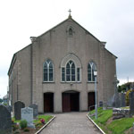
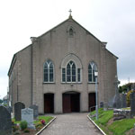

-

Owning Retirement Homes. Formerly Sue Ryder Homes
-

A sea of yellow rapeseed. Rich growth of April May
-
 Lacy Carpenter
Lacy Carpenter
Performing with American Singers in Piltown Church
-
 Temleorum and Corbally Hill
Temleorum and Corbally Hill
Corbally Hill overlooks Templeorum and the Suir Valley.
-
 Fiddown Wooden Bridge
Fiddown Wooden Bridge
Fiddown Bridge was constructed in 1853 by Waterford and Limerick Railway Company. The bridge was taken over by Great Southern and Western Railway in 1901. It was the last toll bridge in Ireland, until the modern toll roads were introduced.
-
 Tybroughney Stones
Tybroughney Stones
Tybroughney Stones in the Garaveyard in Tybroughney.Maintained by interested people of Tybroughney.
-
 Forgiveness Stone Eucharistic Congress
Forgiveness Stone Eucharistic Congress
The Forgiveness Stone where people had an opportunity to beg forgiveness for the sins of the past and in particular for forgiveness where children were harmed.
-
 Sunset over the Suir
Sunset over the Suir
Sunset over the Suir from "Fiddown Bridge".
-
 Fiddown Bridge
Fiddown Bridge
Replacement bridge at Fiddown.Gateway to Waterford
Welcome To Templeorum Parish Co. Kilkenny
MASS may be viewed from templeorumparish.com https://www.churchservices.tv/piltown While we are now generally permitted to gather in greater numbers, COVID-19 remains a serious threat. Moving in a positive direction we need to continue taking sensible precautions. In church we will continue with the proven routines of ventilation, disinfecting, hand-cleaning, mask-wearing and maintenance of a personally responsible social distancing practice. Please co-operate with the ushers and observe any safety directions in place locally. This will be particularly relevant at special occasions like funerals where large crowds gather and tend to stand in the aisles and the doorways.
Forthcoming dates for your diary: Saturday 3otht October Vigil mass 6 p.m. Piltown Sunday 28th Nov. Bishop Denis Nulty will visit Mooncoin Hall to meet with the Pastoral Committee of the Parish Cluster of Kilmacow, Mooncoin and Templeorum. All parishioners are welcome to attend. Time to be confirmed. Monday Prayer meetings in the Community hall will resume soon. Table Tennis has resumed on Thursday evenings in the Community Hall and new members are welcome. Congratulations to all involved on the opening of the new playground which was blessed on Friday last Ossory youth
Keep an eye out for Social Dancing at the GAA Complex on wednesday evenings.
|
FG |
Anniversary Masses Please continue to notify the Sacristans of requests for anniversary and other special masses or intentions ALL BAPTISMS WILL CONTINUE TO BE HELD IN PILTOWN CHURCH
Parish Contact Details PARISH OFFICE 051 643112 ~~~~~~~~~~~~~~~~~~~ parish fm radio on 105mhz Safeguarding Our Children. If you have a child safeguarding concern or wish to raise a matter from the past you may confidentially contact the Diocesan Designated Liaison Person, Mr. Cathal Cullen on 087 100 0232
|

 
